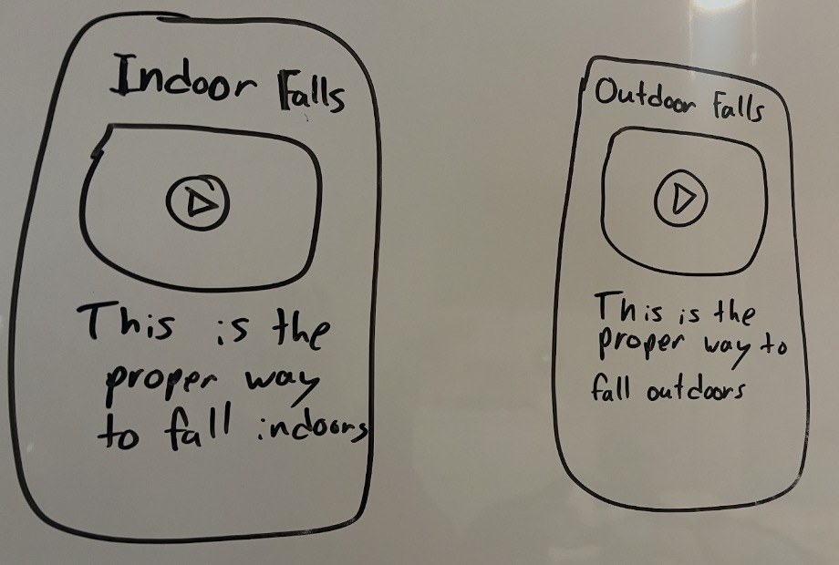
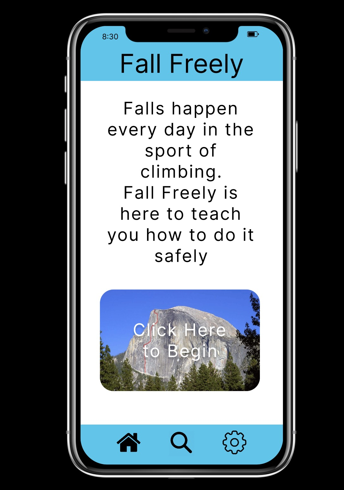

Fall Freely is an app designed to teach new rock climbers how to fall safely to ensure that they don't get injured as they start learning how to climb.
Figma, User Testing, Paper Prototyping
The development of Fall Freely was informed by user research and multiple iterations. Here's how it evolved:
I decided to teach how to fall correctly while rock climbing so that people could keep from getting injured through an app.
Once I decided what my app was going to be about, I created some low fidelity prototypes to create the feel of what the app was going to be like

Due to the short nature of the final project, I had to go straight from low fidelity prototyping to high fidelity prototype which is what you see below.
